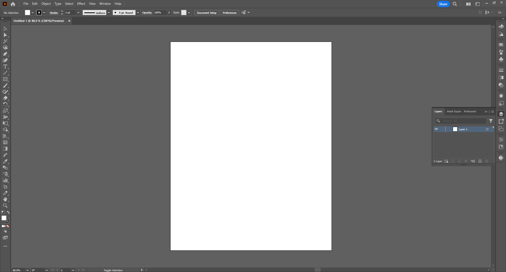
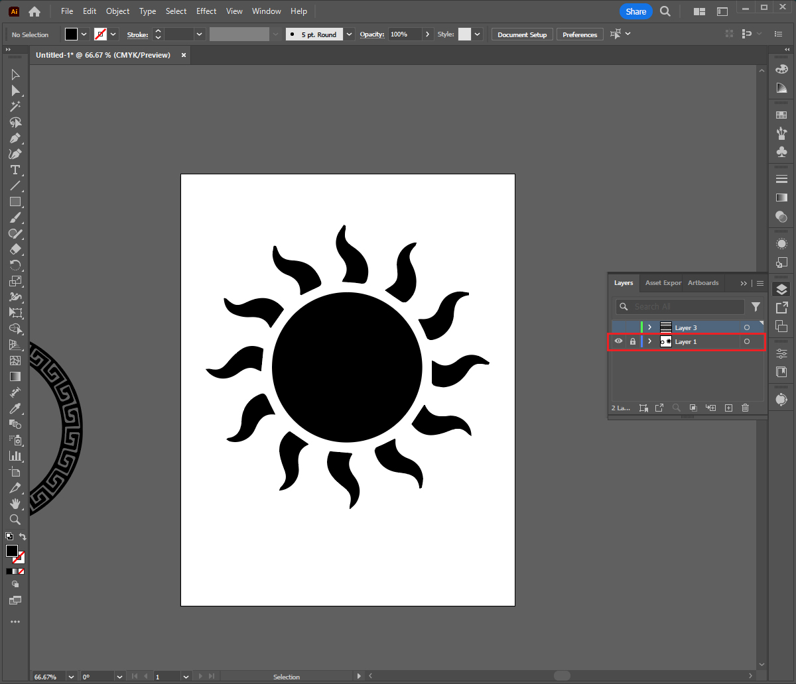
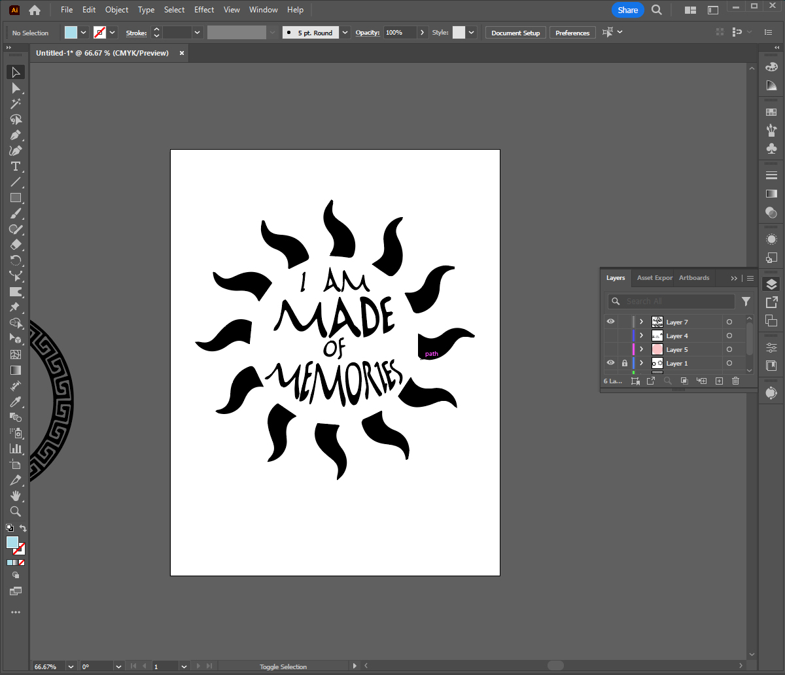
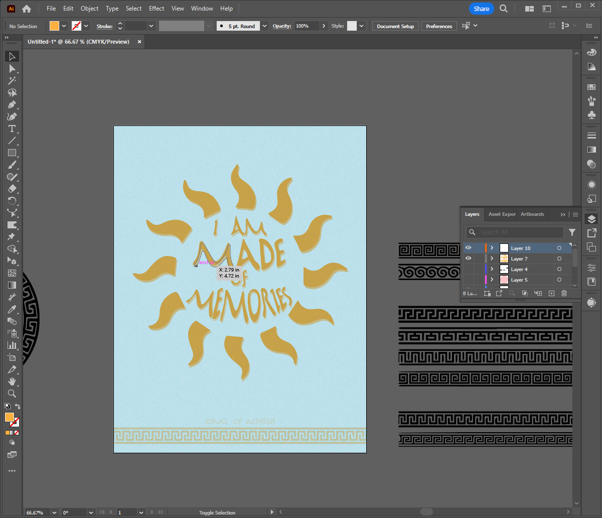

In order to create a tyopgraphy graphic, you are going to need a few things including:
In Adobe Illustrator, or youur preferred program, open a new document. You can adjust the size as you need.
In your new document, you will adjust your font around your image. Make sure the base layer is locked and not movable. You can then create a new layer and start adding your text.
Once you've added the text you want, then it's time to adjust it to fit the shape. You can do this a number of ways, but I am going to simply use the text wrap tool to keep it simple and easy. I want it to fit in the center. And remember, it doesn't need to be exact!
And now that you've got the text where you want it, then it's time to add whatever you want to make it more interesting. I've added a bit of a shadow, some design elements to the bottom, and a very simple textured background.
Want another great Illustrator tutorial? Check out this video by S Designs on how to create a watercolor ink stain!